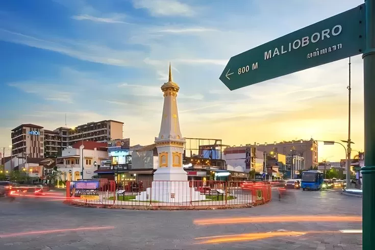

Pada tanggal Sabtu, 8 Maret 2025 sampai dengan Jumat, 14 Maret 2025, saya bersama dengan teman-teman sekolah menuju ke Kota Yogyakarta untuk mengalami Edutrip. Dalam Edutrip ini kami mengunjungi beberapa tempat seperti Candi Prambanan, Gereja, Museum-museum, dan lain-lain. Selama Edutrip ini kami juga mengalami Live in di Desa Wisata Pentingsari.
